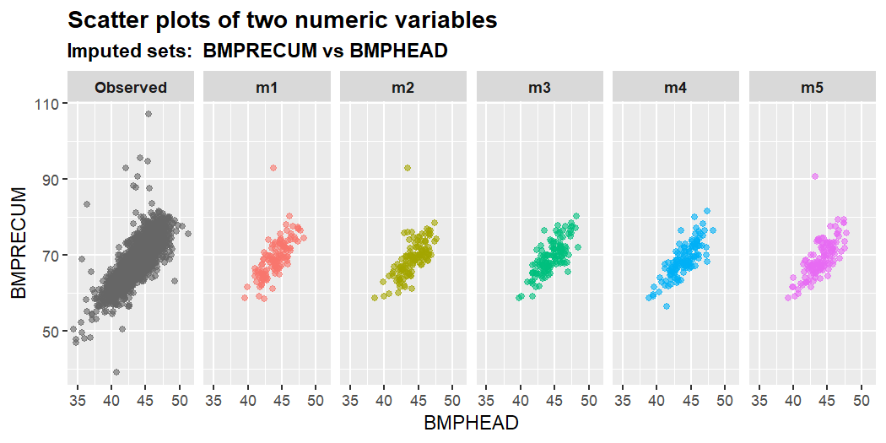
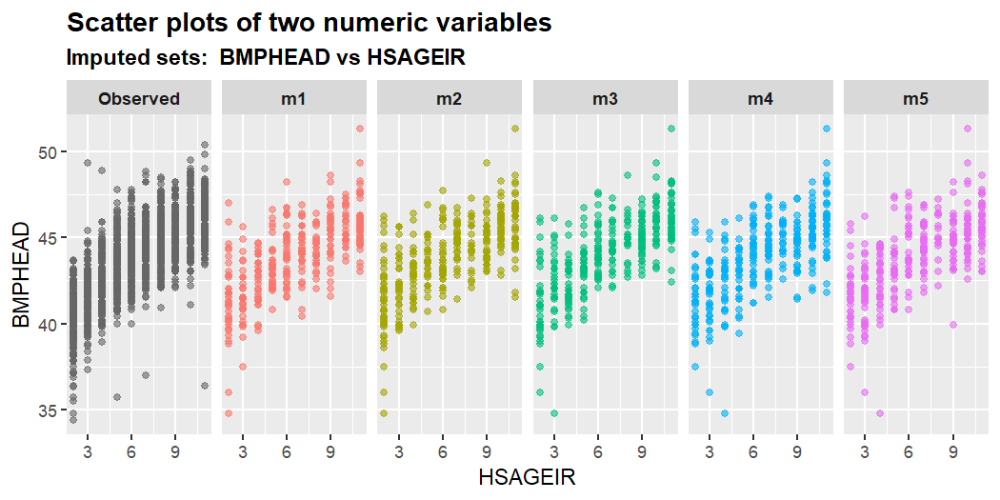

mixgb is a scalable multiple imputation framework based on XGBoost, subsampling and predictive mean matching. The proposed framework is implemented in an R package mixgb. We have shown that our framework obtains less biased estimates and reflects appropriate imputation variability, while achieving high computational efficiency. For more details, please check our paper https://arxiv.org/abs/2106.01574.
New updates
January 2023
- Major change of default settings for mixgb().
Our package has changed from using bootstrapping to subsampling with a default setting of subsample = 0.7. After further investigations, we discovered that although bootstrapping often works effectively, it can introduce bias in certain situations. As a result, we have made subsampling the default method instead of bootstrapping.
May 2022
- Visual diagnostic functions of multiply imputed data
- Use S3 instead of R6
- Plot functions can show masked missing data (if provided)
April 2022
- User can now set different number of iterations
maxit. - Both single and multiple imputation with XGBoost can do predictive mean matching
- Bootstrap data to make
mimputations is optional. User can setbootstrap = FALSEto disable bootstrap. Users can also set sampling related hyperparameters of XGBoost (subsample, colsample_bytree, colsample_bylevel, colsample_bynode) to be less than 1 to achieve similar effect. - Add predicted mean matching type 0. Now the options for
pmm.typeareNULL,0,1,2or"auto"(type 2 for numeric/integer variables, no PMM for categorical variables). - Added more validation checks
- Compatible with
data.table - Cross-validation to pre-tune
nrounds
Notice
- Currently users can set XGBoost parameter
nthreadfor multithreading with OpenMP support. However, MacOS has disabled OpenMP support.
1. Installation
You can install the development version of mixgb from GitHub with:
# install.packages("devtools")
devtools::install_github("agnesdeng/mixgb")1.1 Data cleaning before imputation
It is highly recommended to clean and check your data before imputation. Here are some common issues:
- Data should be a data frame.
- ID should be removed
- Missing values should be coded as
NAnotNaN -
Infor-Infare not allowed - Empty cells should be coded as
NAor sensible values - Variables of “character” type should be converted to “factor” instead
- Variables of “factor” type should have at least two levels
The function data_clean() can do a preliminary check and fix some obvious problems. However, it would not fix all issues related to data quality.
cleanWithNA.df <- data_clean(rawdata)2. Impute missing values with mixgb
We first load the mixgb package and the nhanes3_newborn dataset, which contains 16 variables of various types (integer/numeric/factor/ordinal factor). There are 9 variables with missing values.
str(nhanes3_newborn)
#> tibble [2,107 × 16] (S3: tbl_df/tbl/data.frame)
#> $ HSHSIZER: int [1:2107] 4 3 5 4 4 3 5 3 3 3 ...
#> $ HSAGEIR : int [1:2107] 2 5 10 10 8 3 10 7 2 7 ...
#> $ HSSEX : Factor w/ 2 levels "1","2": 2 1 2 2 1 1 2 2 2 1 ...
#> $ DMARACER: Factor w/ 3 levels "1","2","3": 1 1 2 1 1 1 2 1 2 2 ...
#> $ DMAETHNR: Factor w/ 3 levels "1","2","3": 3 1 3 3 3 3 3 3 3 3 ...
#> $ DMARETHN: Factor w/ 4 levels "1","2","3","4": 1 3 2 1 1 1 2 1 2 2 ...
#> $ BMPHEAD : num [1:2107] 39.3 45.4 43.9 45.8 44.9 42.2 45.8 NA 40.2 44.5 ...
#> ..- attr(*, "label")= chr "Head circumference (cm)"
#> $ BMPRECUM: num [1:2107] 59.5 69.2 69.8 73.8 69 61.7 74.8 NA 64.5 70.2 ...
#> ..- attr(*, "label")= chr "Recumbent length (cm)"
#> $ BMPSB1 : num [1:2107] 8.2 13 6 8 8.2 9.4 5.2 NA 7 5.9 ...
#> ..- attr(*, "label")= chr "First subscapular skinfold (mm)"
#> $ BMPSB2 : num [1:2107] 8 13 5.6 10 7.8 8.4 5.2 NA 7 5.4 ...
#> ..- attr(*, "label")= chr "Second subscapular skinfold (mm)"
#> $ BMPTR1 : num [1:2107] 9 15.6 7 16.4 9.8 9.6 5.8 NA 11 6.8 ...
#> ..- attr(*, "label")= chr "First triceps skinfold (mm)"
#> $ BMPTR2 : num [1:2107] 9.4 14 8.2 12 8.8 8.2 6.6 NA 10.9 7.6 ...
#> ..- attr(*, "label")= chr "Second triceps skinfold (mm)"
#> $ BMPWT : num [1:2107] 6.35 9.45 7.15 10.7 9.35 7.15 8.35 NA 7.35 8.65 ...
#> ..- attr(*, "label")= chr "Weight (kg)"
#> $ DMPPIR : num [1:2107] 3.186 1.269 0.416 2.063 1.464 ...
#> ..- attr(*, "label")= chr "Poverty income ratio"
#> $ HFF1 : Factor w/ 2 levels "1","2": 2 2 1 1 1 2 2 1 2 1 ...
#> $ HYD1 : Ord.factor w/ 5 levels "1"<"2"<"3"<"4"<..: 1 3 1 1 1 1 1 1 2 1 ...
colSums(is.na(nhanes3_newborn))
#> HSHSIZER HSAGEIR HSSEX DMARACER DMAETHNR DMARETHN BMPHEAD BMPRECUM
#> 0 0 0 0 0 0 124 114
#> BMPSB1 BMPSB2 BMPTR1 BMPTR2 BMPWT DMPPIR HFF1 HYD1
#> 161 169 124 167 117 192 7 0To impute this dataset, we can use the default settings. The default number of imputed datasets m = 5. Note that we do not need to convert our data into dgCMatrix or one-hot coding format. Our package will convert it automatically. Variables should be of the following types: numeric, integer, factor or ordinal factor.
# use mixgb with default settings
imputed.data <- mixgb(data = nhanes3_newborn, m = 5)2.1 Customize imputation settings
We can also customize imputation settings:
The number of imputed datasets
mThe number of imputation iterations
maxitXGBoost hyperparameters and verbose settings.
xgb.params,nrounds,early_stopping_rounds,print_every_nandverbose.Subsampling ratio. By default,
subsample = 0.7. Users can change this value under thexgb.paramsargument.Predictive mean matching settings
pmm.type,pmm.kandpmm.link.Whether to convert ordinal factors to integer (imputation process will be faster)
ordinalAsIntegerWhether to use bootstrapping
bootstrapInitial imputation methods for different types of variables
initial.num,initial.intandinitial.fac.Whether to save models for imputing newdata
save.modelsandsave.vars.
# Use mixgb with chosen settings
params <- list(max_depth = 3, gamma = 0, eta = 0.3, min_child_weight = 1,
subsample = 0.7, colsample_bytree = 1, colsample_bylevel = 1,
colsample_bynode = 1, nthread = 4, tree_method = "auto",
gpu_id = 0, predictor = "auto")
imputed.data <- mixgb(data = nhanes3_newborn, m = 5, maxit = 1,
ordinalAsInteger = FALSE, bootstrap = FALSE, pmm.type = "auto",
pmm.k = 5, pmm.link = "prob", initial.num = "normal", initial.int = "mode",
initial.fac = "mode", save.models = FALSE, save.vars = NULL,
xgb.params = params, nrounds = 100, early_stopping_rounds = 10,
print_every_n = 10L, verbose = 0)2.2 Tune hyperparameters
Imputation performance can be affected by the hyperparameter settings. It may seem daunting to tune a large set of hyperparameters, but often we can narrow down the search as many hyperparameters are correlated. In our package, we have a function mixgb_cv() to tune nrounds. There is no default nrounds value in XGBoost, so we need to specify it. The default nrounds in mixgb is 100. However, we recommend using mixgb_cv() to find the optimal nrounds first.
cv.results <- mixgb_cv(data = nhanes3_newborn, verbose = FALSE)
cv.results$response
#> [1] "BMPHEAD"
cv.results$best.nrounds
#> [1] 18By default, mixgb_cv() will randomly choose an incomplete variable as the response and build an XGBoost model with other variables using the complete cases of the dataset. Therefore, each run of mixgb_cv() is likely to return different results. Users can also specify the response and covariates in the argument response and select_features, respectively.
cv.results <- mixgb_cv(data = nhanes3_newborn, nfold = 10, nrounds = 100,
early_stopping_rounds = 1, response = "BMPHEAD", select_features = c("HSAGEIR",
"HSSEX", "DMARETHN", "BMPRECUM", "BMPSB1", "BMPSB2",
"BMPTR1", "BMPTR2", "BMPWT"), verbose = FALSE)
cv.results$best.nrounds
#> [1] 19Let’s just try setting nrounds = cv.results$best.nrounds in mixgb() to obtain m imputed datasets.
imputed.data <- mixgb(data = nhanes3_newborn, m = 5, nrounds = cv.results$best.nrounds)3. Visualize multiply imputed values
It is important to assess the plausibility of imputations before doing analysis. The mixgb package provides several visual diagnostic functions using ggplot2 to compare multiply imputed values versus observed data.
We will demonstrate these functions using the nhanes3_newborn dataset. In the original data, almost all missing values occurred in numeric variables. Only seven observations are missing in the binary factor variable HFF1 . In order to visualize some imputed values for other types of variables, we create some extra missing values in HSHSIZER (integer), HSAGEIR (integer), HSSEX (binary factor), DMARETHN (multiclass factor) and HYD1 (Ordinal factor) under MCAR.
withNA.df <- createNA(data = nhanes3_newborn, var.names = c("HSHSIZER",
"HSAGEIR", "HSSEX", "DMARETHN", "HYD1"), p = 0.1)
colSums(is.na(withNA.df))
#> HSHSIZER HSAGEIR HSSEX DMARACER DMAETHNR DMARETHN BMPHEAD BMPRECUM
#> 211 211 211 0 0 211 124 114
#> BMPSB1 BMPSB2 BMPTR1 BMPTR2 BMPWT DMPPIR HFF1 HYD1
#> 161 169 124 167 117 192 7 211We then impute this dataset using mixgb() with default settings. A list of five imputed datasets are assigned to imputed.data. The dimension of each imputed dataset will be the same as the original data.
imputed.data <- mixgb(data = withNA.df, m = 5)The mixgb package provides the following visual diagnostics functions:
Single variable:
plot_hist(),plot_box(),plot_bar();Two variables:
plot_2num(),plot_2fac(),plot_1num1fac();Three variables:
plot_2num1fac(),plot_1num2fac().
Each function will return m+1 panels to compare the observed data with m sets of actual imputed values.
Here are some examples. For more details, please check the vignette Visual diagnostics for multiply imputed values.
plot_hist(imputation.list = imputed.data, var.name = "BMPHEAD",
original.data = withNA.df)
plot_2num(imputation.list = imputed.data, var.x = "BMPHEAD",
var.y = "BMPRECUM", original.data = withNA.df)
plot_2num(imputation.list = imputed.data, var.x = "HSAGEIR",
var.y = "BMPHEAD", original.data = withNA.df)
plot_1num1fac(imputation.list = imputed.data, var.num = "BMPHEAD",
var.fac = "HSSEX", original.data = withNA.df)
4. Impute new unseen data using a saved imputer object
First we can split the nhanes3_newborn dataset into training data and test data.
library(mixgb)
data("nhanes3_newborn")
set.seed(2022)
n <- nrow(nhanes3_newborn)
idx <- sample(1:n, size = round(0.7 * n), replace = FALSE)
train.data <- nhanes3_newborn[idx, ]
test.data <- nhanes3_newborn[-idx, ]We can use the training data to obtain m imputed datasets and save their imputation models. To achieve this, users need to set save.models = TRUE. By default save.vars = NULL, imputation models for variables with missing data in the training data will be saved. However, the unseen data may also have missing values in other variables. Users can be comprehensive by saving models for all variables by setting save.vars = colnames(train.data). Note that this would take much longer as we need to train and save a model for each variable. If users are confident that only certain variables will have missing values in the new data, we recommend specifying the names or indices of these variables in save.vars instead of saving models for all variables.
# obtain m imputed datasets for train.data and save
# imputation models
mixgb.obj <- mixgb(data = train.data, m = 5, save.models = TRUE,
save.vars = NULL)When save.models = TRUE, mixgb() will return an object containing the following:
imputed.data: a list ofmimputed dataset for training dataXGB.models: a list ofmsets of XGBoost models for variables specified insave.vars.params: a list of parameters that are required for imputing new data usingimpute_new()later on.
We can extract m imputed datasets from the saved imputer object by $imputed.data.
train.imputed <- mixgb.obj$imputed.data
# the 5th imputed dataset
head(train.imputed[[5]])
#> HSHSIZER HSAGEIR HSSEX DMARACER DMAETHNR DMARETHN BMPHEAD BMPRECUM BMPSB1
#> 1: 7 2 1 1 1 3 42.1 64.9 6.8
#> 2: 4 3 2 2 3 2 42.6 67.1 8.8
#> 3: 3 9 2 2 3 2 46.5 64.3 8.6
#> 4: 3 9 2 1 3 1 46.2 68.5 10.8
#> 5: 5 4 1 1 3 1 44.7 63.0 6.0
#> 6: 5 10 1 1 3 1 45.2 72.0 5.4
#> BMPSB2 BMPTR1 BMPTR2 BMPWT DMPPIR HFF1 HYD1
#> 1: 7.8 9.0 10.0 8.45 1.701 2 1
#> 2: 8.8 13.3 12.2 8.70 0.102 2 1
#> 3: 8.0 10.4 9.2 8.00 0.359 1 3
#> 4: 10.0 16.6 16.0 8.98 0.561 1 3
#> 5: 5.8 9.0 9.0 7.60 2.379 2 1
#> 6: 5.4 9.2 9.4 9.00 2.173 2 2To impute new data with this saved imputer object, we use the impute_new() function. User can also specify whether to use new data for initial imputation. By default, initial.newdata = FALSE, we will use the information of training data to initially impute the new data. New data will be imputed with the saved models. This process will be considerably faster as we don’t need to build the imputation models again.
test.imputed <- impute_new(object = mixgb.obj, newdata = test.data)If PMM is used when we call mixgb(), predicted values of missing entries in the new dataset are matched with donors from training data. Users can also set the number of donors for PMM when imputing new data. By default, pmm.k = NULL , which means the same setting as the training object will be used.
Similarly, users can set the number of imputed datasets m. Note that this value has to be smaller than or equal to the m in mixgb(). If it is not specified, it will use the same m value as the saved object.
test.imputed <- impute_new(object = mixgb.obj, newdata = test.data,
initial.newdata = FALSE, pmm.k = 3, m = 4)5. Install mixgb with GPU support
Multiple imputation can be run with GPU support for machines with NVIDIA GPUs. Note that users have to install the R package xgboost with GPU support first.
The xgboost R package pre-built binary on Linux x86_64 with GPU support can be downloaded from the release page https://github.com/dmlc/xgboost/releases/tag/v1.4.0
The package can then be installed by running the following commands:
# Install dependencies
$ R -q -e "install.packages(c('data.table', 'jsonlite'))"
# Install XGBoost
$ R CMD INSTALL ./xgboost_r_gpu_linux.tar.gzThen users can install package mixgb in R.
Users just need to specify tree_method = "gpu_list" in the params list which will then be passed to xgb.params in mixgb(). Other GPU-realted arguments include gpu_id and predictor. By default, gpu_id = 0 and predictor = "auto".